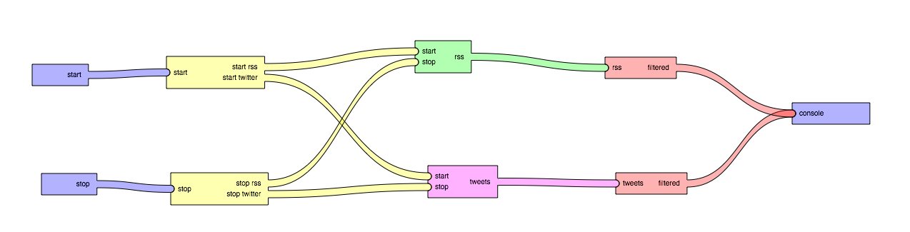

As we build software on larger and larger scales, it becomes readily apparent that methodologies used on the small scale of a single CPU and asingle core do not scale as well as one would like. At Internet scale, programs are inherently parallel entities, often with many cores running in parallel on both the client and server machines for multiple services. Single applications which span thousands of machines across hundereds of data centers made up of many small components processing streams of data are a fact of life for today's systems architects. Message Flow Programming is a model designed to reflect the current state of the art for building widely distributed systems that are flexible enough to scale into the future.
Let's say we're building an application that samples the Twitter stream and polls a wide colletion of RSS feeds for a business intelligence platform. We can break our architecture down into five basic components:
Each of these high level architecture components are responsible for management of some combination of state and behavior, and can be thought of as objects in the Object Oriented (OO) sense. In fact, they are best represented as corporate entities or collections of individual objects which act as if they were a singular actor as in the Actor Model. Each component communicates with the other components through message streams which transfer information from one component to another. As we are dealing with a network of components, we can represent the message streams as simple directed graphs. However, as we must be careful to avoid cyclic message flows which could result positive feedback loops which can result in exponential message volumes, we'll represent the graph in a unidirectional fashion from left to right as follows:
In this design, we have a number of common idioms for the design of components. To the far left, the components only produce messages in response to user behavior. The act of pressing either the or will send a message to the appropriate controller which will coordinate the behavior of the other components in the system. On the far right, the console block represents the output of the user interface, which could conceptually be simply a log displaying all of the RSS items and tweets that the engine deemed interesting. It could also represent a database or any other mass storage device which could be queried for salient information such as a search index. In all cases, the final entity is a consumer of messages and does not send any on its own account.
The two yellow boxes represent controllers which route messages to multiplex messages to multiple recipients. These components may authenticate the users, ensure the system maintains a determinant state, or merely ensure all of the components are initialized in the correct order. In this example diagram, we can assume each controller merely ensures that both the Twitter and RSS engines start and stop at the same time. As we may have many thousands of processes running pulling down the full Twitter firehose or scraping half the Internet ever hour, the management layer can become very necessary for even basic tasks.
Both the RSS engine in green and the Twitter engine in purple are a special kind of signal generator. They both take multiple messages as output, and then selectively either generate a vast number of messages or none at all, depending on the internal state of the engines. Both the RSS and Twitter engines query external data sources. In the case of the RSS engine it uses a poll idiom in which it periodically queries a variety of data sources and generates messages based on the results. The Twitter engine on the other hand uses a retransmit idiom, in which it is constantly receiving its own stream of messages from Twitter, and retransmits each as they arrive from the upstream data source. The internal finite statemachine for each engine has a boolean flag which determines if it should process upstream data or not, true if the last message received on the command and control interface was start or false if stop was last seen.
The red filter boxes represent another selective retransmitter, which for our purposes will send only a small subset of the messages it receives out the other end. In practice, this bit would use a combination of machine learning techniques to score and partition the data into two sets: data worth looking at and junk. This sort of boolean filter behavior is very common, and differs substantially from the RSS and Twitter feed generators in that it is performed on a per message basis. In contrast the Twitter and RSS feed generators are amplifiers which turn a single start message into a potentially unbounded number of messages. Filters provide a way to reduce the amount of noise in a message stream.
The above message passing architecture diagram was constructed using the Flow Framework which provides a visual programming model for connecting components through message streams. While it is currently a work in progress, a demo video of it working in practice will make it clear how that digaram was constructed: